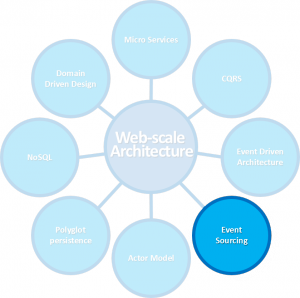

Event Sourcing

Doel
Concept 'Event Sourcing' bekend
Wat is Event Sourcing?
Using an object's history to reconstitute its state


{
'user_id': 3,
'type': 'ArtikelToegevoegd',
'timestamp': '',
'data':
{
'artikel': 'Toetsenbord'
}
}
Event Store

- List of immutable events
- Append only
You can't change history!
Immutability
Geen update/delete
- Performance door caching
- Audit logging
- Simple backups
- Bescherming tegen media decay/bit rot
- Disk space
Compensating transaction
Wat als je iets verkeerd doet?
Compensating transaction
Wat als je iets verkeerd doet?
Compensating transaction
Wat als je iets verkeerd doet?
Compensating transaction
Wat als je iets verkeerd doet?
Compensating transaction
Wat als je iets verkeerd doet?
Compensating transaction
Wat als je iets verkeerd doet?
Projections
Current state is a left-fold of previous behaviours.
Projections

Projections

Projections

Projections

Projections

Projections

Projections

Projections

Projections

Projections

Projections

Projections

Projections

Service Architectuur

Wat is het niet?
- Holy grail
- Top level architecture
Voordelen
- Lijst van immutable events
- Realtime BI
- Debugability/Testability
- Performance (append only)
- Geen object <-> relational database mappings
- Scalable (read models)
- Temporal queries
- Selective/Occassional synchronisation
Nadelen
- Complex
- Event log groeit snel
Patterns
Alleen gebruiken als noodzakelijk!
Snapshotting

Snapshotting

Read models
Optimized query handling

Read models
Optimized query handling

Read models
Server driven subscription

Read models
Server driven subscription

Read models
Consumer driven subscription
Versioning
In-memory upgrade mechanism
{
'user_id': 3,
'type': 'ArtikelToegevoegd',
'timestamp': '',
'data': {
'artikel': 'Toetsenbord'
}
}
{
'user_id': 3,
'type': 'ArtikelToegevoegd',
'version': 2,
'timestamp': '',
'data': {
'artikel': 'Toetsenbord',
'platform': 'Desktop'
}
}
Versioning

Versioning
Event merging/Splitting up
{
'type': 'MouseDown'
}
{
'type': 'MouseUp'
}
{
'type': 'Clicked'
}
Versioning

TWK mutaties

TWK mutaties

TWK mutaties

TWK mutaties

TWK mutaties

TWK mutaties

TWK mutaties

Merge-based concurrency
Wanneer Event Sourcing?
- Rich domain models
- Non-CRUD behaviour
- Auditing
- Monitoring/ Realtime BI
- Domain is inherently event driven
Producten
- GetEventStore (by Greg Young)
- NEventStore
- Kafka
Future
- Code changes?
- N-temporal queries
- Client side Event Sourcing
- Occasionally connected system